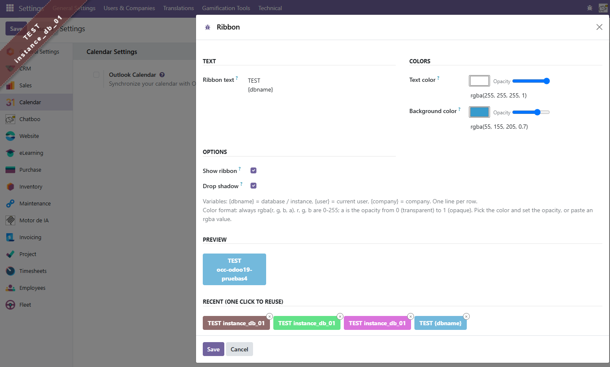

Displays a configurable diagonal ribbon in the corner of every backend page to clearly identify non-production instances (TEST, DEV, STAGING, etc.).
Unlike other ribbon modules, PNS Ribbon is immune to Odoo frontend
changes between versions — it injects vanilla JS/CSS directly into
the <head>, bypassing the asset bundler entirely.
rgba(...) field{dbname}, {user}, {company}Activate debug mode, then open Settings → Technical → Ribbon (administrators only) to configure text, colors, opacity and preview the result in real time.
| Variable | Replaced with |
|---|---|
{dbname} | Database / instance name |
{user} | Current user's display name |
{company} | Current company's name |
You can also edit raw values via Settings → Technical → Parameters → System Parameters:
| Parameter | Description | Example |
|---|---|---|
pns_ribbon.html | Ribbon text | TEST<br>{dbname} |
pns_ribbon.textColor | Text color | rgba(255, 255, 255, 1) |
pns_ribbon.backgroundColor | Background color | rgba(255, 0, 0, 0.5) |
pns_ribbon.enabled | Master switch (0 = hidden) | 1 |
pns_ribbon.shadow | Drop shadow (0 = flat) | 1 |
The ribbon is version-agnostic by design: it inherits
web.layout and injects a <script> +
<link> directly into the <head>,
bypassing the Odoo asset bundler. The only version-specific piece is the
color picker widget in the configuration form (OWL1 for Odoo 13–14, OWL2
for Odoo 15–19+).
Apache License 2.0 — © 2025 PATANEGRA Soft